GAM Solution이란?
글로벌 감사·내부통제·권한 관리를 통합 지원하는 플랫폼입니다. SAP뿐 아니라 Non-SAP 시스템까지 아우르며, IAM·권한 관리·SoD 분리 등 핵심 기능을 제공합니다. 기업은 내부회계 감사 대응, 규제 준수, 리스크 감소, 운영 효율성을 동시에 확보할 수 있습니다.
내부회계 및 권한 정비를 위한 시스템
웅진의 Global Audit Management Solution은 내부 회계관리 제도의 실질적 운용을 위한 능동적 시스템이며, 위험관리 수준을 향상 시킬 수 있는 통제 시스템입니다. 내부회계관리, IT감사관리, 권한관리를 표준화된 프로세스로 운영 가능하며 실시간 모니터링을 통해 즉각적인 인사이트 정보를 제공합니다.
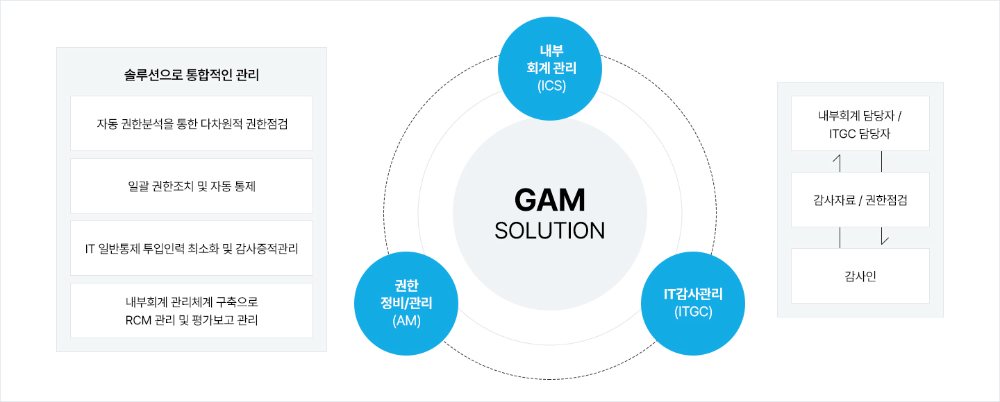
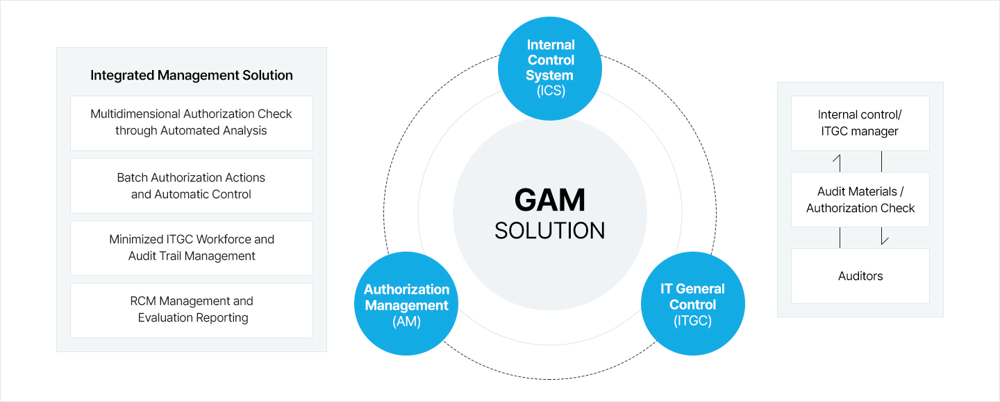
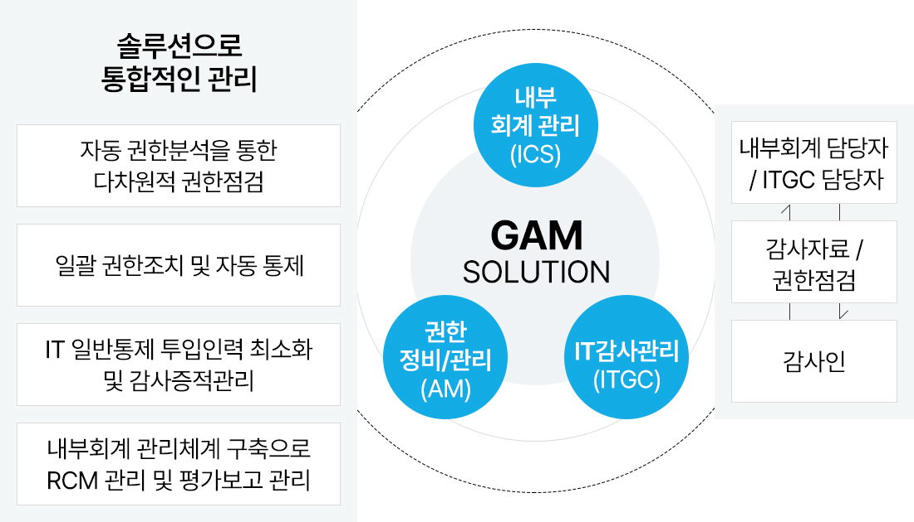
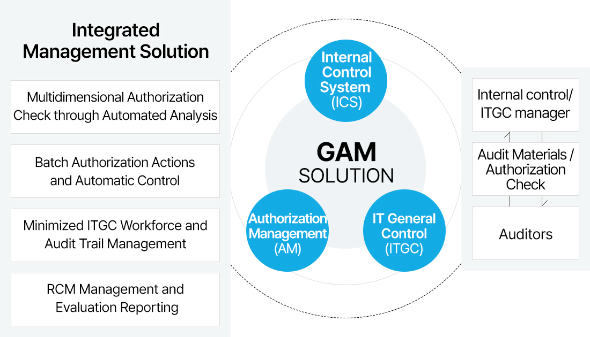
솔루션별 주요 장점 및 차별점
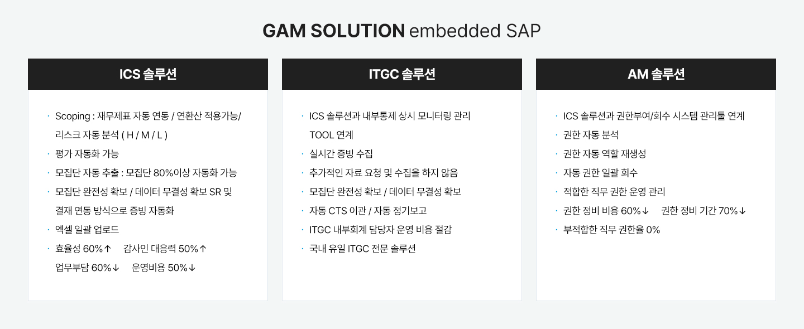
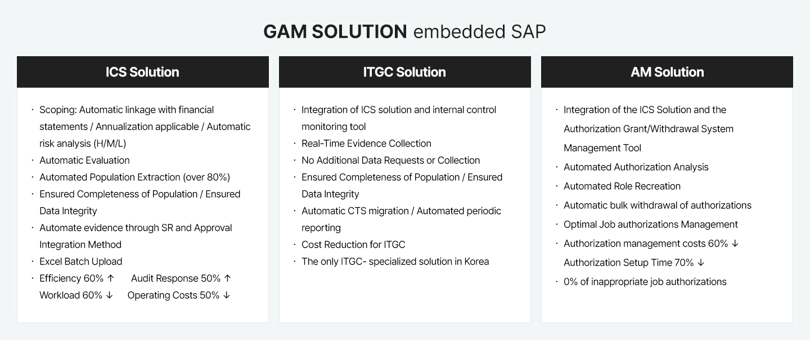
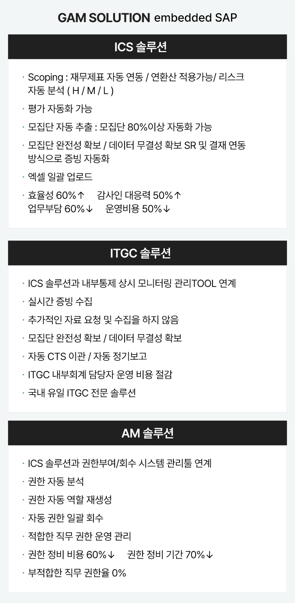
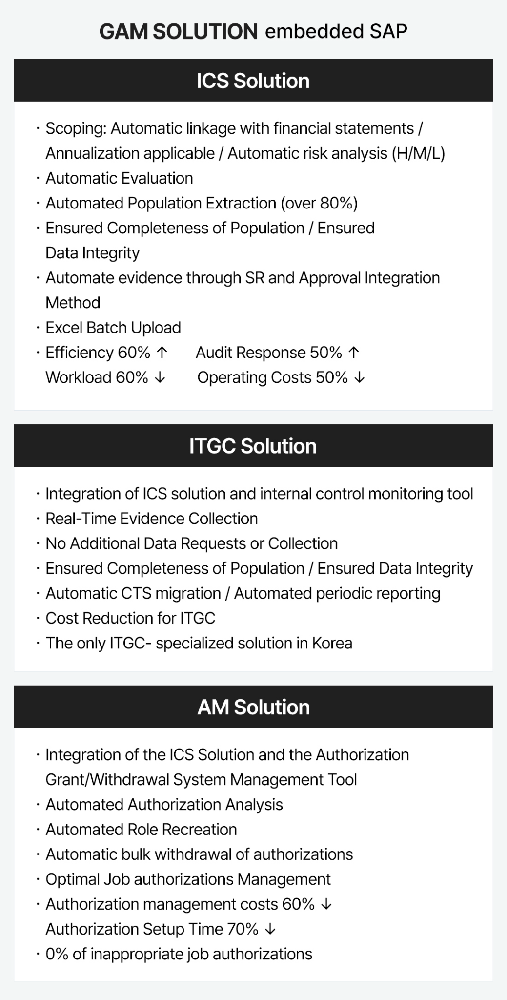
시스템 구성도
체계적인 관리 절차와 기준을 확립함으로써 효율적인 관리가 가능합니다. 재 개정안 및 각종 법규에 능동적으로 대응하고, 위험관리 수준을 향상시킬 수 있습니다.
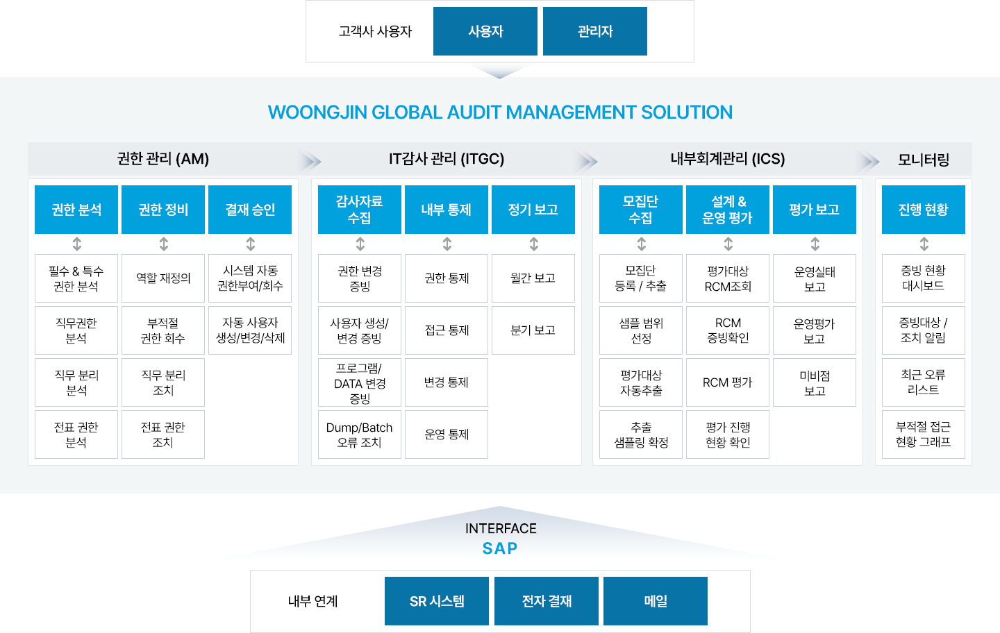
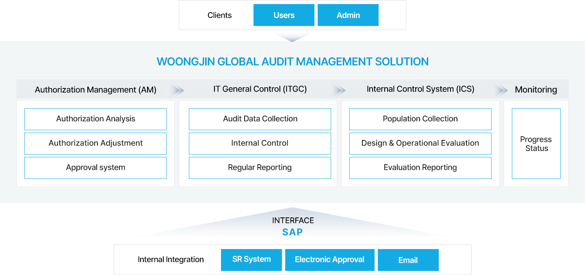
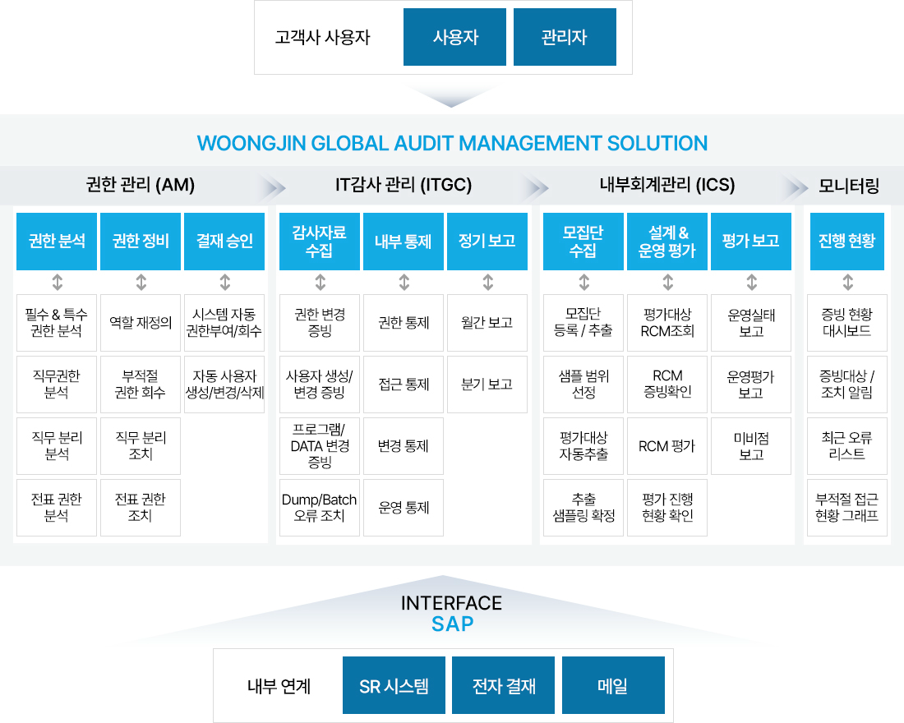
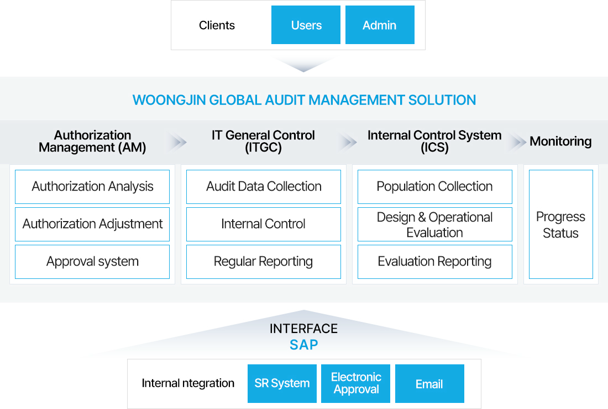
시스템 구현 방법론
네임카드 영역
FAQ가장 자주 묻는 질문과 답변을 모았습니다.
Q1. AICC란 무엇인가요?
AICC (AI Contact Center)는 인공지능 기술을 활용해 고객 문의를 자동화하고 상담 품질과 운영 효율을 개선하는 지능형 고객센터입니다. AI 음성봇·챗봇, 상담 지원, 데이터 분석 기능 등을 통해 고객 만족도와 상담 효율성 모두를 제고할 수 있습니다.
Q2. AICC란 무엇인가요?
AICC (AI Contact Center)는 인공지능 기술을 활용해 고객 문의를 자동화하고 상담 품질과 운영 효율을 개선하는 지능형 고객센터입니다. AI 음성봇·챗봇, 상담 지원, 데이터 분석 기능 등을 통해 고객 만족도와 상담 효율성 모두를 제고할 수 있습니다.
Q3. AICC란 무엇인가요?
AICC (AI Contact Center)는 인공지능 기술을 활용해 고객 문의를 자동화하고 상담 품질과 운영 효율을 개선하는 지능형 고객센터입니다. AI 음성봇·챗봇, 상담 지원, 데이터 분석 기능 등을 통해 고객 만족도와 상담 효율성 모두를 제고할 수 있습니다.
Q4. AICC란 무엇인가요?
AICC (AI Contact Center)는 인공지능 기술을 활용해 고객 문의를 자동화하고 상담 품질과 운영 효율을 개선하는 지능형 고객센터입니다. AI 음성봇·챗봇, 상담 지원, 데이터 분석 기능 등을 통해 고객 만족도와 상담 효율성 모두를 제고할 수 있습니다.
Q5. AICC란 무엇인가요?
AICC (AI Contact Center)는 인공지능 기술을 활용해 고객 문의를 자동화하고 상담 품질과 운영 효율을 개선하는 지능형 고객센터입니다. AI 음성봇·챗봇, 상담 지원, 데이터 분석 기능 등을 통해 고객 만족도와 상담 효율성 모두를 제고할 수 있습니다.
프로젝트 사례Amazon Web Services로 디지털 비지니스에 성공한 사례를 만나보세요.
 BMW코리아BMW Korea on DMS BMW Korea on DMS
BMW코리아BMW Korea on DMS BMW Korea on DMS
[프로젝트 개요]
BMW코리아는 비즈니스 확대에 따른 효율적 운영을 위해 서비스의 신뢰성과 확장성이 중요해졌습니다. 클라우드의 장점인 글로벌 비즈니스의 확대, 빠른 대응 및 안정적인 운영을 위해 웅진과 함께 AWS 클라우드 기반의 DMS를 도입했습니다.
[의의]
- EKS 클러스터에 자동화되고 신뢰할 수 있는 인프라를 구현하여 보다 확장성 있는 서비스 제공
- 판매 시스템 업그레이드 및 안정성 보장
BMW코리아는 비즈니스 확대에 따른 효율적 운영을 위해 서비스의 신뢰성과 확장성이 중요해졌습니다. 클라우드의 장점인 글로벌 비즈니스의 확대, 빠른 대응 및 안정적인 운영을 위해 웅진과 함께 AWS 클라우드 기반의 DMS를 도입했습니다.
[의의]
- EKS 클러스터에 자동화되고 신뢰할 수 있는 인프라를 구현하여 보다 확장성 있는 서비스 제공
- 판매 시스템 업그레이드 및 안정성 보장
BMW코리아BMW Korea on DMS
AICC (AI Contact Center)는 인공지능 기술을 활용해 고객 문의를 자동화하고 상담 품질과 운영 효율을 개선하는 지능형 고객센터입니다. AI 음성봇·챗봇, 상담 지원, 데이터 분석 기능 등을 통해 고객 만족도와 상담 효율성 모두를 제고할 수 있습니다.
BMW코리아BMW Korea on DMS
AICC (AI Contact Center)는 인공지능 기술을 활용해 고객 문의를 자동화하고 상담 품질과 운영 효율을 개선하는 지능형 고객센터입니다. AI 음성봇·챗봇, 상담 지원, 데이터 분석 기능 등을 통해 고객 만족도와 상담 효율성 모두를 제고할 수 있습니다.
다운로드Amazon Web Services에 대한 더 많은 정보를 알아보세요.
웅진 Amazon Web Services 소개서웅진 Amazon Web Services 소개서웅진 Amazon Web Services 소개서웅진 Amazon Web Services 소개서웅진 Amazon Web Services 소개서웅진 Amazon Web Services 소개서
웅진 Amazon Web Services 소개서